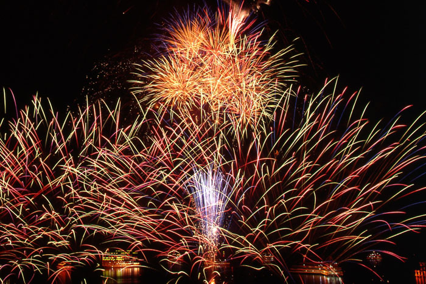

"The story of a dragon that lived in Lake Ashi, who would inflict damage on the lives of people living near the Lake. A chief priest of the shrine used his magical powers to change the dragon into a 9-headed protective spirit."
A week of festivities starts with the Kosui Festival. Legend holds that at the bottom of Lake Ashi in Hakone a nine headed dragon lived, tormenting local villagers. He was placated and calmed by a wandering priest and now protects the shores of the lake and the people and visitors to the Hakone area. The festivities are centered around an offering of sake and red rice to the dragon by the priests of Hakone Shrine.
This is one of Hakone`s largest festivals. Walk among the food stalls along the cool shores of Lake Ashi and enjoy the firework display in the evening. The serene setting of floating lanterns, toro-nagashi, and illuminated red shrine gates is a wonderful scene to experience.